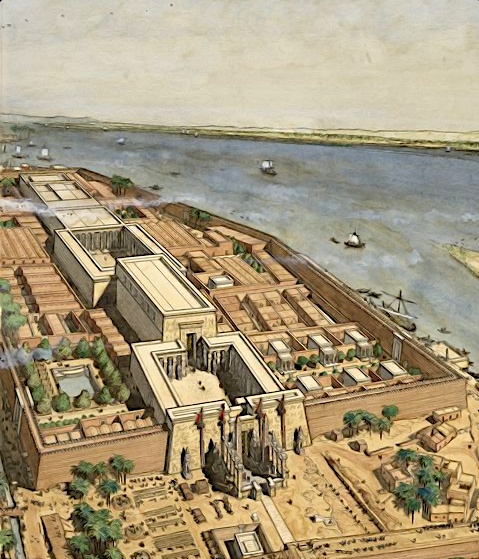

Ein neuer Pharao
Die millionen Tage
Mit gro�er Kraft weht der Wind aus dem S�den herauf. Staub wirbelt auf, r�tet die Luft, verschleiert die Scheibe der Sonne. Der Lotus beugt sich und das Schilfrohr neigt das Haupt. Wellen t�rmen sich auf, in den ewigen Fluten des Nil. Gro� ist die Kraft des Sturms, sein Br�llen �berzieht das Land. Doch die Menschen darin sind stumm. So wie die Fluten des Nil steigen und fallen, so hat auch das Land sich gewandelt. Es bl�hte auf, als m�chtig der Schlaf noch war der anderen V�lker, nicht beschenkt von netzenden Leben des Flusses. So verfiel es aber auch zermalmt von Krieg und Hunger, von Seuchen und Streit. Und das Land ward dunkel von Asche und Rauch.

Doch aus den Glimmenden Funken erhob sich das Land ein ums andere Mal und trieb neue Bl�ten und wandelte sein Gesicht wie auch die Zeit sich gewandelt. Durchweg aber erkannte man das Land, das der gro�e Fluss benetzt, das von Lotus und Papyrus seine Kronen gebar. Sein Ka �berdauerte und die Linien seiner Herrscher, von den unvordenklichen Zeiten der Einigung von Ober- und Unter�gypten bis zu jenen jungen Eroberer Alexander, �berdauerten mit ihm. Doch nun muss das Land sich erneut wandeln. Denn Alexander ist nicht mehr und ein neuer Herrscher nimmt Platz auf den ewigen Thron der �gyptischen K�nige, welcher nun schon eine Million Tage und mehr gesehen hat unter dem Auge des Re. Was wird nun aus dem Land der g�ttlichen Zeichen? Wird eine neue Dynastie dem Volk Gl�ck und Segen bescheren und die Maat f�r viele Generationen erhalten, oder wird der Fremde Herr seinen Schatten werfen �ber das Land am Ufer des gro�en Stromes und �gypten im Staub der W�ste zestreuen.

Ptolemaios
Der Ersatz des Demetrios. Der unscheinbare und schlichtende. Der Vorkoster und Leibw�chter. Und erst sehr sp�t auch Heerf�hrer. Er war nie die erste Wahl Alexanders gewesen, das war nur zu offensichtlich. Zwischen all den jugendlichen Hetairoi zu denen er erst mit knapp vierzig Jahren gez�hlt wurde, wirkte er eher phlegmatisch. Lediglich Antigonos und Antipatros z�hlten mehr an Jahren, waren daf�r aber auch schon unter Alexanders Vater Phillipp zu m�chtigen Heerf�hrern gek�rt worden.Doch hatte auch er sich verdient gemacht. Er war es schlie�lich, der im Kampf gegen die Aspasier in Indien pers�nlich in die gegnerischen Reihen vorstie�, an seiner Seite nur ein paar Dutzend Hypaspisten und den F�rsten dieses fernen Reiches mit seinem Schwert durchbohrte. Die Wunde, die ihm dieser mit einem breiten Speer in seine rechte H�fte bohrte, schmerzte ihm bei Zeiten noch immer. Ja er war nie derjenige, der die Lobges�nge erntete, doch war er ein enger Freund Alexanders. Diese Freundschaft hatte sich durchaus ausgezahlt, war es doch Alexander selbst, der ihm dazu riet nach seiner vor Harmatelia erlittenen Vergiftung das Arlantiskraut aus seinem pers�nlichen Vorrat in mit Wasser verd�nnter Form zu sich zu nehmen, welches seine Leiden nach kaum einem Tag beendete.

Das er jetzt ein eigenes Reich besa�, und nicht etwa irgendein Reich, nein, hierbei handelte es sich schlie�lich um �gypten, dessen Geschichte so alt zu sein scheint wie die zeit selbst, lag zum gro�en Teil an den Machenschaften des Perdikkas. Denn ohne die durch dessen Machtanspr�che losgetretene Wirren, h�tte er die Satrapie �gypten wohl nie erhalten. Doch nun war er hier. Der Schlichter und Geduldige. Lange Zeit hatte er wahrlich auf seine gro�e Chance warten m�ssen, aber als sie dann kam, hatte er zugepackt. Mit beiden H�nden und mit Z�hnen und Klauen und seinen Preis, das reiche Land am Nil nicht wieder losgelassen. Aber was sollte er nun tun mit dieser Beute. Zu glanzvoll war die neue Hauptstadt Alexandria, benannt und gegr�ndet von seinem alten Freund vor so wenigen Jahren, doch schon gewaltig an ausma�en, als dass man ihr einfach den R�cken kehren konnte. Doch war Memphis oder Theben der traditionellere Sitz der Herrscher dieses Landes. Diese hatten aber auch des �fteren ihre Residenzen gewechselt, dachte er sich. Also warum nicht eine neue Metropole f�r eine neue Dynastie?
Doch gab es da ja noch andere Fragen. Sollte seine Familie herrschen wie die Makedonen es getan hatten, oder aber sich den Gepflogenheiten des Landes unterwerfen. Letzteres tat auch Alexander nur zu gerne und Ptolomaios wusste, dass ihm dies nicht nur Freunde eingebracht hatte. Besonders die aus dem �stlichen Mittelmeer hinzugezogenen hellenischen H�ndler und Adelsfamilien w�rden eine Unterwerfung unter die alten Werte dieses Landes wohl verdammen und seiner Dynastie den R�cken kehren. Doch die Millionen von einfachen Menschen in diesem Land h�tte er dabei wohl hinter sich. Auch die immer noch m�chtigen Priester des Amun-Re und der anderen Gottheiten w�rden eine traditionellere Regierung mit wohlwollen unterst�tzen. Es hie� also, bei dieser Option nur die hinzugezogenen Griechen im Auge zu behalten und da diese sich vornehmlich in der Umgebung Alexandrias angesiedelt hatten, konnte er sie auch gleich von einem neuen Herrschersitz dort im Auge behalten. Somit h�tte er sich zumindest aus seiner Sicht ein weitaus bequemeres Nest gemacht, als wenn er vorgehabt h�tte, sich mit dem Volk und den alteingesessenen Eliten �berall im Lande anzulegen. Ja es war wohl wesentlich angenehmer, auf lange Sicht gesehen, sich mit den uralten Traditionen dieses Landes vertraut zu machen und manche davon hatten gewiss auch ihre Vorteile, da war sich Ptolomaios sicher.

Das sch�ne Fest vom W�stental
So steht es nun im Land des gro�en Stromes. Ptolemaios hat die Throne der Gottheiten erhalten und mit ihnen lange Jahre der Herrschaft und das Land �gypten. Er hat geschworen die Maat aufrechtzuerhalten und hat den Ka des Horus in sich aufgenommen. Wiedergeboren als Sohn des Re, als vollkommener Gott, Herr beider L�nder von der Binse und der Biene soll er als neuer Pharao herrschen. Mit der Kr�nung kommen die Pflichten des Herrschers. Und so kann nun zum ersten Mal in fast siebzig Jahren das W�stentalfest in Theben, welches die Bauern und Priester gleicherma�en begehen, unter den Augen des Pharaos wie von der Tradition gefordert stattfinden. Endlich kann Amun-Re wieder in einer festlichen Prozession durch die Stadt zu den Tempeln getragen werden. Im Laufe des Festes wird dann Amun, der K�nig der G�tter und Gott der K�nige, mit gro�em Gefolge in die Stadt der Toten ziehen. Und noch bevor die Himmelsg�ttin Nut die Sonne am Abend wieder verschluckt, werden sich die Gr�ber im Westen Thebens �ffnen. Werden Gel�chter und Gesang, der Geruch feiner Speisen sowie unz�hliger Liter Wein aus den H�usern der Toten aufsteigen. Wird im religi�sen Zentrum �gyptens das Diesseits scheinbar mit dem Jenseits verschmelzen. Denn auf der anderen Flussseite, im Land der untergehenden Sonne, beginnt das Reich der Toten, denn jenseits der Ebene des Niltals liegen die Tempel verstorbener Pharaonen sowie zahllose Gr�ber. Hier, vor den Kalksteinbergen am Rand der W�ste, erheben sich die Tempel der K�nige. In diesen Millionenjahrh�usern huldigen die Pharaonen sich selbst und den G�ttern, auf dass sie ihnen ewiges Leben schenken m�gen. Nach ihrem Tod werden die Herrscher dann selbst zu Gottheiten und fortan in den Tempeln von Priestern mit Opfergaben versorgt. Die Gebeine der Gottk�nige selbst aber ruhen in einer versteckten Senke. Pharao Thutmosis I. hatte einst aus Angst vor R�ubern seine Grabst�tte in den Felsen dieser leicht zu bewachenden Schlucht schlagen lassen. Seither wurden alle Pharaonengr�ber in diesem Tal der K�nige angelegt. Thebens Beamte nutzen die H�nge zwischen diesen Ruhest�tten und den K�nigstempeln als Friedhof. Vor allem hohe Staatsdiener w�hlen Lagen mit Blick auf die Millionenjahrh�user und den heiligen Bezirk des Reichsgottes auf der anderen Flussseite.
An diesem Tag des Festes nun zieht Amun-Re mit seinem Gefolge aus, um die verstorbenen Pharaonen zu besuchen und ihnen durch seine Gegenwart neue Kraft f�r das jenseitige Leben zu spenden. Und w�hrend die Reise des Reichsgottes f�r das Volk wohl nur ein gro�es Spektakel ist, feiern die Angeh�rigen eines Verstorbenen, der es sich leisten konnte, im Westen begraben zu sein, mit ihrem Toten das Sch�ne Fest vom W�stental. Tagelang bereiten sich die Menschen Thebens auf die Feier vor. T�nzerinnen werden verpflichtet, Matten, Schemel, St�hle und Tische in die Totenstadt geschafft, die Gr�ber mit Blumen und Fackeln best�ckt und gro�e Mengen Essen zubereitet.
Diener f�llen Korb um Korb mit Fr�chten und honigs��em Kuchen aus Erdmandeln, schlachten Enten, G�nse, Wachteln, Tauben, Schafe, Schweine und Rinder, schleppen Brennholz von Vorratslagern auf den D�chern hinunter in die offenen K�chen und Innenh�fe. Dort bereiten K�che �ber dem Feuer Fisch, Fleisch und Gem�se zu. Der Geruch von Erbsen, Linsen, Zwiebeln, Knoblauch und Kr�utern zieht durch die H�user, es duftet nach frischem Brot. Brauer liefern den Hausherren Bier, hergestellt aus mit Datteln und Wasser vergorenen Braubroten. Diener schaffen aus den Kellern Wein herbei, den die Menschen bei Festen in gro�en Mengen trinken und den G�ttern opfern, der aber auch als Heilmittel gilt und bei allerlei k�rperlichen Gebrechen geschluckt wird. Auf vielen Kr�gen ist verzeichnet, wann und auf welchem Gut der Wein gekeltert und abgef�llt wurde.

Theben, am fr�hen Morgen nach Neumond. Fahnen wehen �ber dem gro�en Tor im Westen des Amun-Tempels, davor blitzen, den Sonnenstrahlen nachempfunden, golden die Spitzen von monumentalen Obelisken auf. Von �berall her str�men Menschen herbei. Oberster Herr des Kultes ist der Pharao, alle anderen Gottesdiener handeln nur als seine Stellvertreter. Den h�chsten Rang unter ihnen nimmt an jedem Tempel der Hohepriester ein. T�r�ffner des Himmels wird in Theben der Hohepriester des Amun genannt. Gro�e Bedeutung haben auch die Vorlesepriester, die w�hrend der Zeremonien die heiligen Texte rezitieren.

Jubel brandet auf, als die Prozession im ge�ffneten Tempeltor erscheint. Hinter der Barke schreitet der irdische Sohn des Reichsgottes. Pharao Ptolemaios I., der zu dem Totenfest eigens aus Alexandria angereist ist. Wedeltr�ger begleiten den K�nig und f�cheln ihm mit Strau�enfedern an langen Stangen k�hle Luft zu. Die Priesterschaft des Amun sowie Abgeordnete anderer Tempel schlie�en sich dem Zug an. Langsam bewegt er sich vom Tempeltor in Richtung Nilufer. Unz�hlige Menschen s�umen den Weg. Gem�chlich legt der Festzug den wenige Hundert Meter langen Weg bis zum Flussufer zur�ck, entlang einer eigens f�r diesen Zweck angelegten Prozessionsstra�e, die das Haus des Gottes mit dem Anleger des Tempels verbindet. M�nner und Frauen dr�ngen zur Barke des Amun, sie haben mit Gebeten beschriebene Tonscherben dabei, die sie dem vorbeiziehenden Gott in den Weg legen, als Ausdruck tiefster Fr�mmigkeit. Am Flussufer angekommen, laden Priester das vergoldete G�tterschiff auf eine gr��ere Barke, auf ein echtes Boot aus Zedernholz. Dann setzt der Gott seine Reise auf dem Nil fort, im Schlepptau des k�niglichen Schiffes und gefolgt von unz�hligen kleinen Booten und K�hnen.
Die Barke des Amun n�hert sich langsam dem Bassin vor dem Tempel der Hatschepsut. Er ist der gr��te Bau im heiligen W�stental. Dort wird Amun das erste Mal einkehren auf seiner allj�hrlichen Reise zu den Tempeln der verg�ttlichten Pharaonen. Priester schultern die Barke mit der im Schrein verborgenen Statue des Reichsgottes. Das letzte St�ck von Amuns Weg f�hrt �ber eine 37 Meter breite, von m�chtigen Sphingen ges�umte Prachtstra�e. Dann geht es die erste Rampe hinauf. Die Gl�ubigen m�ssen hier zur�ckbleiben. Nach einiger Zeit sehen sie, wie von der obersten Terrasse dichter Rauch aufsteigt. Das Brandopfer f�r Amun hat begonnen, jenes Opfer, von dem die Menschen hoffen, dass es ihre verstorbenen K�nige st�rken und auch ihnen selbst Heil bringen m�ge. Die Tr�ger haben den Reichsgott in eine Kapelle tief im Inneren des Felsens gebracht. Auf einem Altar im Opferhof entz�ndet Pharao Ptolemaios I. das Fleisch frisch geschlachteter Mastochsen und G�nse. Priester reichen ihm Schalen mit den besten St�cken, sch�tten Myrrhe und Weihrauch in das Feuer. Andere rezitieren heilige Spr�che, auf dass das Leben der gottgewordenen Hatschepsut im Jenseits ewig fortdauern m�ge.

Doch irgendwann verl�schen die letzten Flammen des Brandopfers, sind die Kulthandlungen im Tempel f�r diesen Abend beendet. Nun beginnt f�r die freien M�nner und Frauen der sch�nste Teil des Festes, die Feier in den Gr�bern ihrer Angeh�rigen. Priester und Beamte machen sich auf in Richtung der Gr�berh�gel. Sie tragen mit Bl�tengirlanden umwickelte Buketts aus Papyrusstauden. Ein Tribut an die Verstorbenen, ein Zeichen des Lebens in der Gr�berstadt, die sich mit S�ngerinnen und immer mehr festlich gekleideten Menschen f�llt. Auch die Toten sind nun anwesend. Denn der Ka, die unsterbliche Lebenskraft eines jeden Menschen oder Verstorbenen, verl�sst nach dem Glauben der Feiernden den einbalsamierten K�rper in der unterirdischen, mit Ger�ll und Sand verschlossenen Sargkammer, um die Gaben entgegenzunehmen. Ausrichter und G�ste erheben ihre Schalen und Becher mit Wein. �F�r deinen Ka. Trinke den sch�nen Rauschtrunk! Feiere den sch�nen Tag!", prosten die Anwesenden dem Verstorbenen zu. Musik erklingt w�hrend des Banketts, ein Harfenspieler tr�gt Lieder vor, T�nzerinnen wiegen sich zu den Kl�ngen von Lauten und Oboen.
Vermutlich erst im Morgengrauen verabschieden sich die Hinterbliebenen von den Toten und kehren heim. Das Sch�ne Fest vom W�stental indes geht noch tagelang weiter. Sobald am Morgen die Nachtwachen im Millionenjahrhaus der Hatschepsut ihre Fackeln gel�scht haben, setzt der Reichsgott seine Reise durch die Totenstadt fort. Nun besucht er einen K�nigstempel nach dem anderen, bis er bei dem des noch lebenden Herrschers Ptolemaios I. angekommen ist, welcher in ziemlicher Eile in den letzten Monaten gebaut worden war. Erst danach wird Amun wieder den Nil �berqueren und in der Dunkelheit seines gro�en Heiligtums auf dem Ostufer verschwinden. Und damit wird das Fest des Amun-Re enden und der Alltag in Theben wieder einkehren. Bis die Tore des gro�en Tempels sich erneut �ffnen werden, im n�chsten Jahr am Tage nach dem ersten Neumond im Schemu II, und das sch�ne Fest vom W�stental wieder Zehntausende Menschen und ihre Ahnen zur gr��ten Feier in �gypten zusammenf�hren wird.
